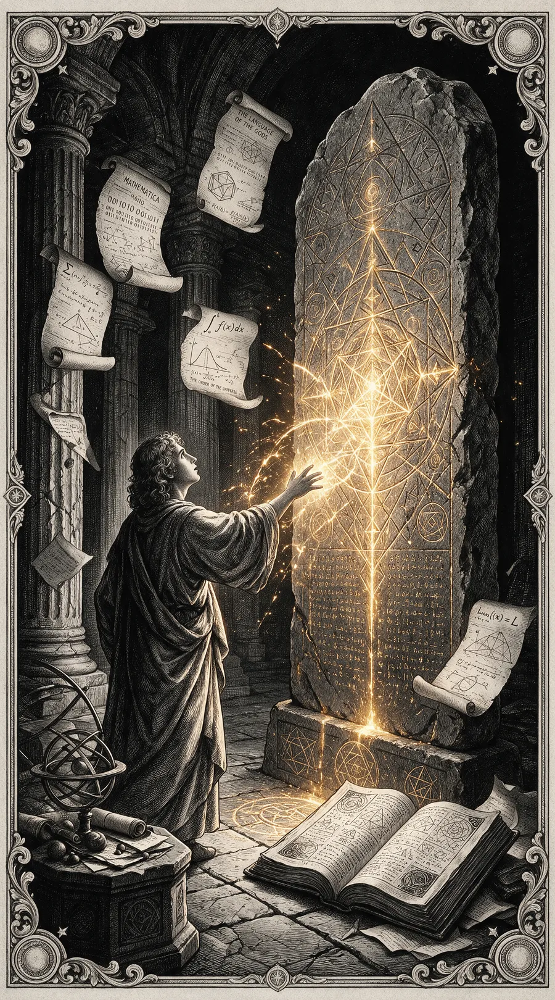
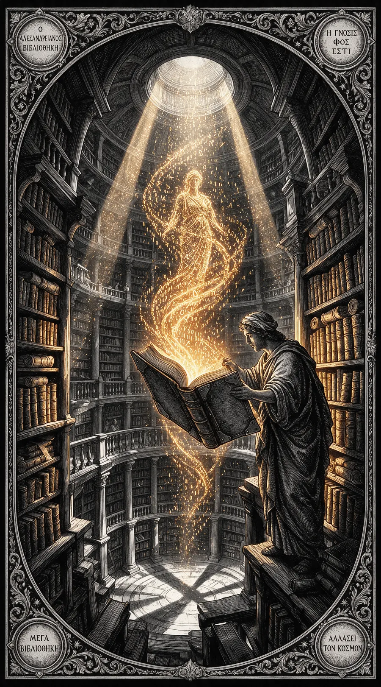
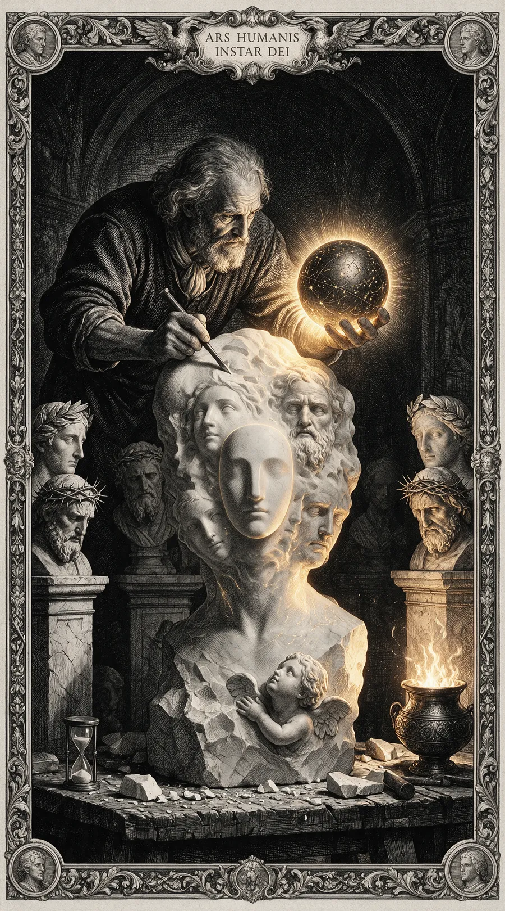
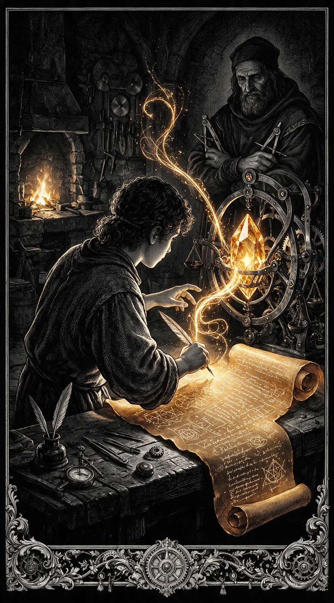
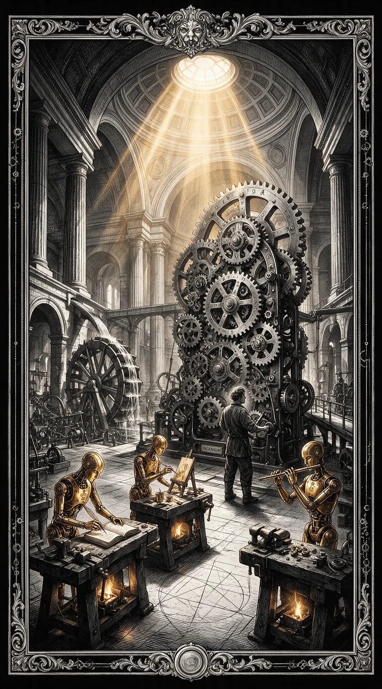
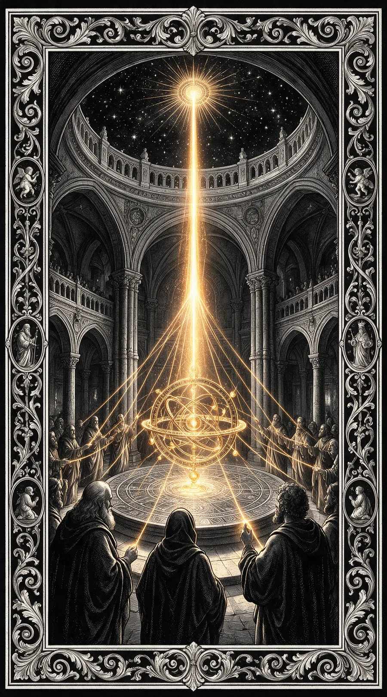
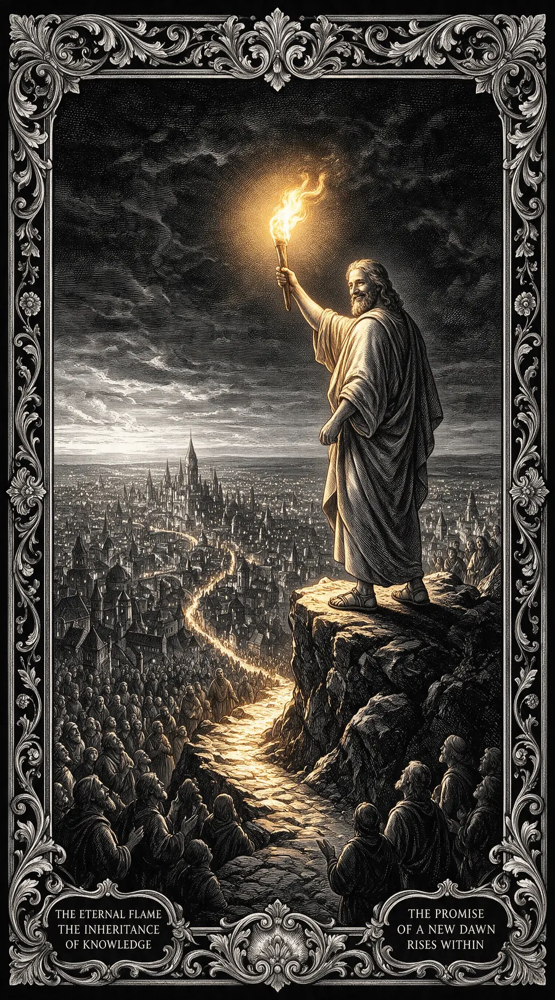

Der Entdecker
Am Anfang steht die Frage: Wie spricht man mit einer Maschine?
Prometheus brachte den Menschen das Feuer — PROMPTHEUS bringt ihnen die Sprache der Maschinen. Jeder grosse Wurf beginnt mit einem einzigen, mutigen Wort.
Hier lernst du, wie ein Sprachmodell denkt, wie es antwortet und wie du es führst.
Du beginnst dort, wo alle beginnen: bei einem Satz, der noch nicht funktioniert. Dass die Maschine dich missversteht, ist selten Zufall — es liegt fast immer an dem, was du weggelassen hast.
Geübt wird nicht im Trockenen: Zu jeder Lektion gehören Aufgaben, die dein Ergebnis prüfen, und ein Tutor, den du fragen kannst, wenn du nicht weiterkommst.
Am Ende dieser Stufe fragst du nicht mehr auf gut Glück. Du weisst, was ein Modell braucht, um dich zu verstehen: einen klaren Auftrag, den nötigen Zusammenhang und eine Vorstellung davon, wie die Antwort aussehen soll.
Stufe 1 von 6 · Der Entdecker

Die Bibliothek
Jedes Wort, das du liest, ist ein Echo von Milliarden anderen.
So ist auch ein Sprachmodell nichts anderes als eine unvorstellbar grosse Bibliothek — das Training lief über eine riesige Menge an Texten.
Du lernst hier, wie Daten zu Wissen werden, wie die Bibliothek aufgebaut ist und wie du den richtigen Ausgangspunkt findest, um die Antworten zu finden, die du suchst.
Eine Bibliothek ohne Ordnung ist ein Haufen Papier. Du siehst hier, wie aus Text zuerst Zahlen werden, aus Zahlen Muster und aus Mustern etwas, das wie Wissen antwortet — und an welchen Stellen dieser Weg Löcher hat.
Denn was in keiner Zeile stand, kann auch nicht herauskommen. Wer weiss, woraus ein Modell gebaut ist, erkennt seine blinden Flecken, bevor sie zu Fehlern werden.
Und du lernst, dem Gedächtnis nachzuhelfen: eigene Notizen, eigene Quellen, eigene Ablage — damit ein Modell nicht nur weiss, was alle wissen, sondern auch, was du weisst.
Stufe 2 von 6 · Die Bibliothek

Das Modell
Viele Wege führen nach Rom — und viele Modelle zur Antwort.
Ob gross oder klein, offen oder geschlossen: Jedes Modell hat eigene Stärken und eine eigene Persönlichkeit.
Lerne hier, die richtigen Werkzeuge zu erkennen, ihre Parameter zu verstehen und deine Anfragen so zu formen, dass aus dir und dem Modell ein unschlagbares Team wird.
Ein grosses Modell ist nicht das bessere, sondern das teurere. Du lernst, bei welcher Aufgabe ein kleines schneller ans Ziel kommt, wann ein offenes genügt und warum eine schwache Antwort oft gar nicht am Modell liegt.
Denn davor stehen ein paar Stellschrauben, die mehr verändern als jeder Wechsel: der Systemtext, die Länge des Gedächtnisses, das Mass an Zufall.
Dazu gehört das Rechnen. Was eine Anfrage kostet, ist keine Nebensache, sondern Teil der Wahl — du lernst, den Preis einer Antwort zu schätzen, bevor du sie stellst.
Am Ende wählst du nicht nach Namen, sondern nach Aufgabe.
Stufe 3 von 6 · Das Modell

Der Geselle
Vom blossen Zuschauen zum Gestalten: Jetzt beginnt die Handarbeit.
Ein Geselle kennt seine Werkzeuge nicht nur, er passt sie an. Hier lernst du, Kontext zu setzen, scharfe Anweisungen zu geben und dein Sprachmodell mit Systemprompts, Regeln und Beispielen zu erziehen — bis es nicht mehr nur antwortet, sondern dir folgt.
Aus einer guten Frage wird eine Vorlage, aus der Vorlage ein Werkzeug, das auch nächste Woche noch trägt. Du zerlegst grosse Aufträge in Schritte und lernst, eine Antwort zu prüfen, statt ihr zu glauben.
Handarbeit heisst hier auch: wiederholbar. Was einmal zufällig gut war, ist noch kein Können — was dreimal hintereinander gut ist, schon.
Und du lernst, Fehler zu lesen. Eine falsche Antwort sagt dir, an welcher Stelle deine Anweisung unklar war. Sie ist die genaueste Rückmeldung, die du bekommen kannst.
Stufe 4 von 6 · Der Geselle

Der Automat
Was, wenn deine Arbeit auch ohne dich liefe? Genau das ist das Ziel.
Hier lernst du, aus einzelnen Befehlen, Schleifen und Abfragen eine echte Automation zu stricken. Du verbindest verschiedene Modelle zu einem stummen, fleissigen Fliessband und bringst deinen eigenen digitalen Automaten bei, Aufgaben zu erledigen — von der Antwort auf Mails bis zum Erstellen ganzer Berichte.
Eine Kette, die sich selbst weiterreicht: Das ist der Sprung von der einzelnen Frage zur Maschine. Sie holt Daten, prüft sie, entscheidet — und antwortet erst danach.
Und du baust die Bremse gleich mit ein. Ein Automat ohne Abbruchbedingung ist kein Werkzeug, sondern ein Risiko. Zu jeder Schleife gehört deshalb die Frage, wann sie aufhört.
Am Ende steht kein Zauber, sondern ein Ablauf: aufschreibbar, weitergebbar, morgen wieder startbar.
Stufe 5 von 6 · Der Automat

Die Akademie
Ein einzelner Gelehrter kann viel wissen. Eine ganze Akademie kann die Welt verändern.
Hier beginnen deine Modelle, sich zu verstehen. Du bringst Spezialisten zusammen — einen für Recherche, einen fürs Schreiben, einen fürs Rechnen — und lässt sie als Team an einer einzigen, grossen Aufgabe arbeiten.
Mehrere Modelle an einer Sache sind kein Selbstzweck. Du lernst, wann Aufteilen wirklich hilft, wie einer dem nächsten übergibt und was geschieht, wenn zwei sich widersprechen.
Ein Orchester braucht keine lauteren Instrumente, sondern einen Takt. Genau den setzt du: wer wann spricht, wer prüft, wer das letzte Wort hat.
Und du lernst die Grenze. Nicht jede Aufgabe wird durch mehr Köpfe besser — manche wird nur teurer.
Willkommen im Orchester des Denkens.
Stufe 6 von 6 · Die Akademie

Das Erbe
Du hast die Stufen erklommen. Die Werkzeuge liegen in deiner Hand, die Modelle folgen deinen Worten, und die Automaten tanzen nach deiner Melodie.
Doch Wissen ist kein Schatz, den man hütet, sondern eine Flamme, die man teilt. Nimm das, was du gelernt hast, und bring es in deine Welt hinaus. Erschaffe, lehre und erleuchte.
Was bleibt, ist nicht die Sammlung deiner Prompts. Es ist der Blick, mit dem du eine Aufgabe ansiehst und schon weisst, wo die Maschine hilft und wo sie im Weg steht.
Deine Reise beginnt nicht an der Spitze des Berges. Sie beginnt erst.
Die Flamme brennt in dir.
Teile sie.
„Die Flamme, die man teilt, brennt ewig."